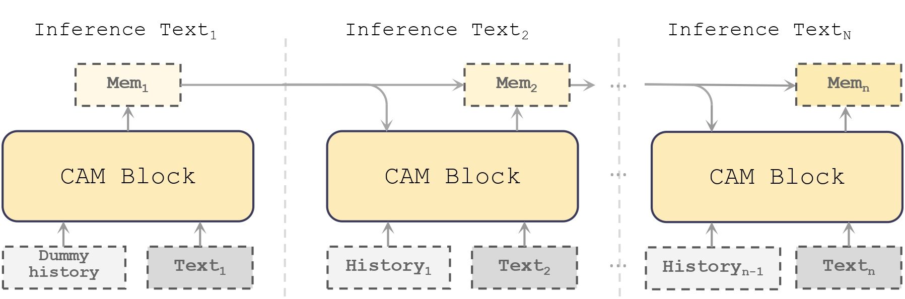
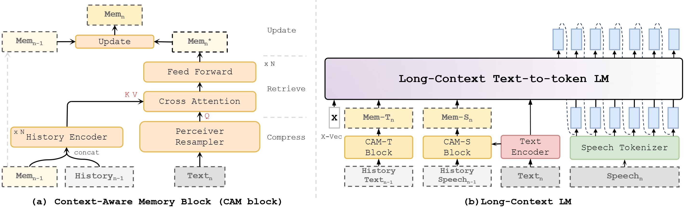

Long-Context Speech Synthesis with Context-Aware Memory
Abstract
In long-text speech synthesis, current approaches typically convert text to speech at the sentence-level and concatenate the results to form pseudo-paragraph-level speech. These methods overlook the contextual coherence of paragraphs, leading to reduced naturalness and inconsistencies in style and timbre across the long-form speech. To address these issues, we propose a Context-Aware Memory (CAM)-based long-context Text-to-Speech (TTS) model. The CAM block integrates and retrieves both long-term memory and local context details, enabling dynamic memory updates and transfers within long sequences to guide sentence-level speech synthesis. Furthermore, the prefix mask is employed to enhance in-context learning ability of large language model. Experimental results demonstrate that the proposed method outperforms baseline and state-of-the-art long-context methods in terms of prosody expressiveness, coherence and context inference cost across paragraph-level speech.
Model Architecture


Evaluation
Groundtruth: the groundtruth speech from novel chapter.
MMCE-Qformer: proposed a multi-modal context-enhanced Qformer, utilizing compressive long-context information to improve TTS performance.
CLAP-RAG: proposed a RAG-enhanced prompt-based TTS framework using a context-aware contrastive language-audio pretraining model and it utilizes entire prompts to guide the generation process.
Baseline: LM trained from scratch using Cosyvoice-LM as backbone.
Proposed: Long-Context LM with context-aware memory block and prefix mask.
w/o Mem-T: Long-Context LM without CAM-T block and Mem-T.
w/o Mem-A: Long-Context LM without CAM-A block and Mem-A.
w/o Prefix Mask: Long-Context LM with standard casual mask.
Short-Form Samples
Sample 1
Text: 擦完以后，白璧把父亲的骨灰盒又放了回去，然后，把母亲的骨灰盒也放了进去。在阴阳两隔十多年之后，他们终于又聚在了一起。
| groundtruth | MMCE-Qformer | CLAP-RAG | Baseline | Proposed | w/o Mem-T | w/o Mem-A | w/o Prefix Mask |
|---|---|---|---|---|---|---|---|
Sample 2
Text: 相会在同一个世界里，白璧想，也许，这也正是母亲会安然地自杀的原因吧。放好以后，工人把墓上的石板又重新盖上。
| groundtruth | MMCE-Qformer | CLAP-RAG | Baseline | Proposed | w/o Mem-T | w/o Mem-A | w/o Prefix Mask |
|---|---|---|---|---|---|---|---|
Sample 3
Text: 今天你为什么不笑啊？叶萧忽然问他，他觉得婚礼上他的新娘始终没有表现出一个新娘应该有的喜悦，白璧脱下了大衣。
| groundtruth | MMCE-Qformer | CLAP-RAG | Baseline | Proposed | w/o Mem-T | w/o Mem-A | w/o Prefix Mask |
|---|---|---|---|---|---|---|---|
Sample 4
Text: 我今天很累。哎，应应该说对不起的人是我，我不应该让你这么累呀。忽然白壁一把抓住了他的手，抓的是那样的紧，这倒让叶萧有些紧张了。
| groundtruth | MMCE-Qformer | CLAP-RAG | Baseline | Proposed | w/o Mem-T | w/o Mem-A | w/o Prefix Mask |
|---|---|---|---|---|---|---|---|
Sample 5
Text: 她想把手抽出来，却发现他的力量比想象中的要大。她怔怔地看着他的脸。这张脸让她想起了许许多多的事儿，她的身体终于热了起来，脸颊上也开始微微的泛红。
| groundtruth | MMCE-Qformer | CLAP-RAG | Baseline | Proposed | w/o Mem-T | w/o Mem-A | w/o Prefix Mask |
|---|---|---|---|---|---|---|---|
Sample 6
Text: 房间里是一片黑暗，什么都看不见，但他可以确定，那是从天花板上发出的声音，像是脚步声，那脚步在不断地徘徊着。从左面到右面，从前面到后面。
| groundtruth | MMCE-Qformer | CLAP-RAG | Baseline | Proposed | w/o Mem-T | w/o Mem-A | w/o Prefix Mask |
|---|---|---|---|---|---|---|---|
Sample 7
Text: 眼前似乎又浮现起了那双神秘的眼睛。不，不可能，绝对不可能叶萧竭力的否定自己的胡思乱想。他又回过头去看了看白壁，房顶的声音，虽然不大。
| groundtruth | MMCE-Qformer | CLAP-RAG | Baseline | Proposed | w/o Mem-T | w/o Mem-A | w/o Prefix Mask |
|---|---|---|---|---|---|---|---|
Sample 8
Text: 其实那个小伙子只比他小两岁，但还是管他叫师傅。叶萧淡淡地说，辛苦你了。你怎么发现这里的？嘿嘿，不能算是我发现的，是房东报答。
| groundtruth | MMCE-Qformer | CLAP-RAG | Baseline | Proposed | w/o Mem-T | w/o Mem-A | w/o Prefix Mask |
|---|---|---|---|---|---|---|---|
Long-Form Samples
Sample 1
Text: 自太古以来，人类眼见周遭世界，诸般奇异之事，电闪雷鸣，狂风暴雨，又有天灾人祸，伤亡无数，哀鸿遍野，绝非人力所能为，所能抵挡。遂以为九天之上，有诸般神灵，九幽之下，亦是阴魂归处，阎罗殿堂。 于是神仙之说，流传于世。无数人类子民，诚心叩拜，向着自己臆想创造出的各种神明顶礼膜拜，祈福诉苦，香火鼎盛。 自古以来，凡人无不有一死。但世人皆恶死爱生，更有地府阎罗之说，平添了几分苦惧，在此之下，遂有长生不死之说。| MMCE-Qformer | CLAP-RAG | Baseline | Proposed |
|---|---|---|---|
Sample 2
Text: 林惊羽气从心头起，一手扼住他的脖子，怒道，说好了抓住就认输的，你服不服？张小凡理也不理。林惊羽脸色通红，手上用力，大声道，服不服？ 张小凡的气管被他扼住，呼吸逐渐困难，慢慢的脸也开始涨红，但他小小年纪，性子竟是极强，硬是一声不吭。林惊羽却是越来越怒，手上力气越来越大，口中一叠声道，服不服，服不服，服不服？| MMCE-Qformer | CLAP-RAG | Baseline | Proposed |
|---|---|---|---|
Sample 3
Text: 眼看那鬼物就要冲到眼前，老僧却并不放下肋下小孩林惊羽，只用持着碧玉念珠的左手，在身前虚空画圆，单手结佛门狮子印，五指屈伸，指尖隐隐发出金光，片刻间已在身前幻出一面金色法轮，金光辉煌，与那鬼物僵持在半空中。 小小伎俩，也来卖。他一个弄字还未说完，突然全身大震，只觉得右手抱着小孩林惊羽处，手腕被异物咬了一口，一股麻痒感觉立时行遍半身，眼前一黑，身前法轮登时摇摇欲坠。 正在此时，前方那个鬼物又有诡异变化，在它左右四眼正中额头上，卡，卡两声，竟又开了一只血红巨目，腥风大起，威势更重，只听一声鬼嚎，血色红光闪过，那鬼物将金色法轮击得粉碎，重重打在老僧胸口。| MMCE-Qformer | CLAP-RAG | Baseline | Proposed |
|---|---|---|---|